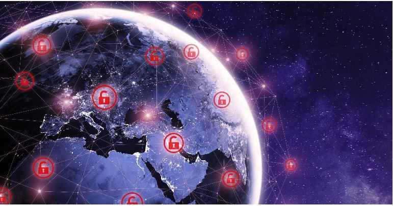

Recent Cyber Attacks, Data Breaches & Ransomware Attacks November 2022
The year may be ending but the cyber attacks certainly aren't. November 2022 was full of high-profile data breaches, attacks on cryptocurrency exchanges, government bodies and more. Here is your monthly roundup of all the cyber-attacks, data breaches and ransomware attacks that made it to the headlines in November 2022.
This list has been created for purely educational purposes. The idea, as always, is not to create panic. The list is meant to highlight the urgency with which organisations across the globe must evaluate their cybersecurity maturity and practices.
Vodafone Italy discloses security breach
Vodafone is facing yet another security headache after its Italian subsidiary confirmed that it had suffered a cyber attack.In a notice to customers, the telecoms firm said that the incident, which took place in September, resulted in the compromise of sensitive personal data.
The exposed information includes customers’ contact details, subscription details and identity documents. Fortunately, Vodafone said that neither account passwords nor network traffic were breached.
However, it is urging those affected to be careful about potential communications supposedly from the organisation. Scammers are likely to use the stolen information in phishing scams designed to capture people’s login details or financial data. They might even use the reports of the cyber attack they perpetrated as a pretext for their scam.